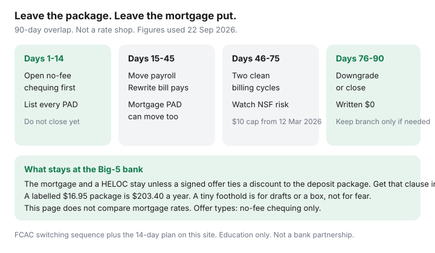

Personal Finance · Canada
How to Leave a Big-5 Fee Package in Canada Without Losing Mortgage or Branch Access
A Big-5 monthly package feels mandatory when the mortgage, the line of credit, and the branch that notarized your will all sit at the same bank. It is usually a chequing product with a monthly fee, not the mortgage. RBC, TD, Scotiabank, BMO, and CIBC are the five. You can move payroll and pre-authorized debits to a no-fee account and leave the loan where it is. A labelled package at $16.95 a month is $203.40 a year before a single extra debit. That illustration is the same one the 14-day switch guide uses. Your fee schedule is the number that counts. Date-stamped 22 Sep 2026.
The short operating sprint — open first, two billing cycles, then close — is the 14-day plan. Which no-fee account matches your ATM habits is the Simplii, Tangerine, and EQ stack. NSF design after the $10 cap from 12 March 2026 is the NSF guide. This page is the slower version: 90 days, because a mortgage payment, a HELOC, and a safety-deposit box should not be surprised.
Disclosure: No-fee chequing accounts are an offer type. Saving Optimizer may later add partner links. We do not currently claim bank partnerships. This is education, not lending, legal, or mortgage advice. This page does not compare mortgage rates and does not suggest you break a mortgage to escape a $17 fee.
Key takeaways
- Separate the mortgage and the HELOC from everyday chequing. Ask, in writing, whether any rate discount in your commitment is conditional on keeping the package. If it is not, the loan can stay.
- Open the no-fee account first. Move payroll only after a deposit has landed. Rewrite PADs and bill payments, including the mortgage PAD if the lender accepts the new account.
- Keep a Big-5 foothold only for a job the digital bank cannot do: a safety-deposit box you still use, a bank draft the branch must produce this month, or a USD cash need. A foothold is not a $30 package.
- Overlap two full billing cycles. The federal $10 cap on NSF fees at regulated banks, from 12 March 2026, is a backstop, not a plan.
- Downgrade or close on day 76 to 90 with a written zero balance. Do not orphan an overdraft line, a credit card you meant to keep, or a registered plan.
Separate the mortgage or HELOC from everyday chequing
The fear is specific: “If I close the chequing account they will call the mortgage.” Read the commitment and the most recent renewal. You are looking for a sentence that ties a rate discount, a fee waiver, or a HELOC feature to a named deposit package or a minimum balance. If that sentence exists, price it. A discount worth more than the annual package fee can be a reason to keep a cheaper deposit product at that bank, not a reason to keep the richest package. If the sentence does not exist, the mortgage remains a loan with a payment. This page will not help you shop a new rate. Breaking a mortgage to save $203 can cost an interest-rate differential that dwarfs the package. Do not do that from a fee article.
A HELOC is more often attached to a deposit account than the mortgage is, because the payment and the available credit are operational. Ask the lender whether the HELOC payment can be a PAD from a different bank. Many can. If the agreement requires an account at the same institution, downgrade that account to the lowest operational option once the everyday spending has moved. Do not close the only account the HELOC draws from until the lender confirms the new payment path in writing.
Credit cards issued by the same bank are also separate products. Closing a card to “finish the breakup” can raise utilization. The utilization guide says to keep the card you need. A bank exit and a card exit are two decisions.
No-fee chequing that still clears payroll and e-Transfer
The destination has to do four things: receive payroll, send Interac e-Transfer, pay the PADs you listed, and give you cash without a surprise ATM fee you will not track. The stack guide’s map, still the right one: Simplii on CIBC ATMs, Tangerine on Scotiabank ABMs, EQ Bank if you can live with ATM rebates and your payroll will land there. A credit union with a branch is the right answer if you actually stand in branches. Match the ATM to your life. A welcome bonus is an offer type with an expiry, not a reason to pick an account that cannot take your rent PAD.
Open it in week one. Leave the Big-5 package open. Order a void cheque or the direct-deposit form from the new account before you tell payroll. Confirm your name matches HR’s file. Joint households should decide whose payroll lands where before two people move the same PAD twice.

Keep a minimal Big-5 foothold only if it truly matters
List the branch jobs you used in the last year. Bank drafts for a closing or a car purchase can often be ordered from a credit union or, with notice, from a digital bank — ask about the fee and the delay before you assume only the Big Five can do it. A safety-deposit box does not require a premium chequing package; ask what the box costs on its own and what account, if any, must stay open. USD cash on the way to the airport is a real branch job. Once a year is not a reason to pay $17 every month. A no-monthly-fee savings account, or the bank’s basic account if one exists with a balance waiver you will actually hold, is the foothold. If the only waiver is $5,000 sitting idle, compare that idle cash with the HISA rate on the emergency-fund guide. Idle money that exists only to waive a fee is still a fee.
Do not keep the package “in case we need a mortgage broker inside the branch.” Renewal shopping is a different project, on the Housing guides, and it does not require today’s package to remain open for the next eleven months. Advisor appointments that exist to sell you an RESP or a mutual fund are not branch access. The RESP pages on this site are the alternative to that appointment.
Switch bill payments and PADs without NSF surprises
Export or photograph 90 days of the old account. Every recurring line becomes a row: payee, amount, date, whether it is a PAD they pull or a bill payment you push. PADs you must change at the payee include rent or the landlord, utilities, insurance, the mortgage servicer, municipal taxes if they debit you, and registered-plan contributions. Bill payments you push die when you stop using the old online banking. Recreate them at the new bank or move them to the payee’s own pre-authorized debit. Subscriptions and gym memberships hide in the small lines. So do annual charges.
Move payroll first, wait until one pay has landed in the new account, then flip the PADs that hit in the next two weeks. Leave a buffer in the old account until two cycles have passed with no surprise debit. The NSF cap of $10 at federally regulated banks, in force 12 March 2026, limits one category of damage. It does not stop a landlord’s late fee, a returned insurance payment, or a mortgage servicer’s complaint. Overdraft at the old bank, if you are paying $5 a month plus interest for the privilege, should be turned off only after the buffer has done its job. Turning it off on day one is how a forgotten PAD becomes a returned item.
Government deposits — CRA refunds, benefits, GST/HST credit — are changed in CRA My Account, not by assuming they follow payroll. Registered transfers, if you are also moving a TFSA or RRSP, are a signed transfer, often a week or more, and longer in RRSP season. You do not need to move investments to escape a chequing fee. Leave them until the chequing move is finished if the thought of two projects at once is how mistakes happen.
| Item | Typical move | Confirm in writing |
|---|---|---|
| Payroll and e-Transfer | New no-fee chequing | One pay landed before you drain the old account |
| Household PADs | New account, payee by payee | Two billing cycles clear |
| Mortgage | Stays at the lender | PAD can be redirected; no discount clause you failed to read |
| HELOC | Stays unless you choose to close it | Payment account the lender will accept |
| Credit card | Can stay open | Autopay pointed at the new chequing account |
| Package | Downgrade or close at the end | Zero balance and no orphaned overdraft line |
Close or downgrade without orphaned products
On the day you think you are done, ask the old bank for a list of products on your profile: chequing, savings, overdraft, credit cards, lines of credit, mortgage, HELOC, registered plans, safety-deposit box, uncashed drafts. Close or downgrade only the package. Get written confirmation that the closed account’s balance is zero and that no monthly fee will post again. A verbal “you’re all set” does not survive a fee that posts on the first of the month.
An overdraft line of credit attached to the chequing account may be a reported credit product. Closing it can change utilization the same way closing a card can. If the limit is large and the balance is zero, note it before you close, using the utilization page’s logic. If the balance is not zero, pay it before you close. A leftover negative chequing balance sent to collections is the expensive version of a fee escape.
Joint accounts need both people. A business profile or a trust account is out of scope for this household guide; do not fold it into a personal closure visit. Download statements you will need for a lender or for CRA before the online login dies. Two years of PDFs is a reasonable grab.
A 90-day migration timeline
- Days 1–14. Read the fee schedule and the mortgage commitment for a package clause. Open the no-fee account. List every PAD. Do not close anything. This is the 14-day plan’s sprint, inside a longer overlap.
- Days 15–45. Change payroll. After one pay lands, redirect the mortgage PAD if the servicer allows it, then insurance, utilities, and rent. Update CRA direct deposit. Move e-Transfer auto-deposit. Leave the buffer in the old account.
- Days 46–75. Watch two billing cycles. Anything that still hits the old account gets one more phone call. Turn off overdraft only when the buffer has been bored for a month.
- Days 76–90. Downgrade to a foothold or close. Written zero balance. Cards you kept now autopay from the new account. Put a reminder 30 days later to check that no monthly package fee returned.
If a home purchase is inside the next 90 days, consider waiting until after closing. Lenders read bank statements, and a mid-switch trail is extra explanation on the worst week to provide it. Waiting is not the same as keeping the package forever. The fee will still be there after the keys.
Sources & date stamps
- FCAC-style sequence as used on this site’s 14-day switch guide: open the new account, move payroll, rewrite PADs, overlap two cycles, then close (orientation 22 Sep 2026).
- Labelled package fee of $16.95 a month = $203.40 a year, the illustration already used on the 14-day plan. Read your own fee schedule.
- NSF fee cap of $10 on personal deposit accounts at federally regulated banks from 12 March 2026, as used on the NSF guide.
- Simplii, Tangerine, and EQ access patterns: CIBC ATMs, Scotiabank ABMs, EQ rebates — stack guide, not a ranking.
- No mortgage-rate comparison is provided. Any discount tied to a deposit package has to be read from the commitment you signed.
Frequently asked questions
Will the bank call my mortgage if I close the chequing package?
Not because the package ended, unless your commitment ties a discount or a feature to that deposit product. Read the clause. If it is absent, the mortgage can stay and the payment can often move to a new chequing account. This page does not compare mortgage rates or suggest breaking a mortgage to save a monthly fee.
What does a $16.95 package cost in a year?
A labelled illustration used on our switch guide: $16.95 times 12 is $203.40, before extra transaction fees or NSF. Your schedule may differ. A minimum-balance waiver only helps if the idle cash is cheaper than a no-fee account plus a HISA.
Can I keep a branch for the odd bank draft?
Yes, if you still need one. Ask what a safety-deposit box or a basic account costs on its own. A foothold is not the premium package. Many drafts can be ordered with notice from a credit union or a digital bank. Confirm the fee and the delay before you assume otherwise.
How long should I overlap the two accounts?
Plan on 90 days, with two clean billing cycles inside that window. Open the new account first, move payroll, rewrite PADs, then downgrade or close. The $10 NSF cap from 12 March 2026 at federally regulated banks is a backstop, not a reason to drain the old account on day one.
Should I close the credit card from the same bank?
Not as part of the package exit. The card is a separate product. Closing it can raise utilization. Point autopay at the new chequing account and decide on the card using the utilization guide.